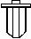
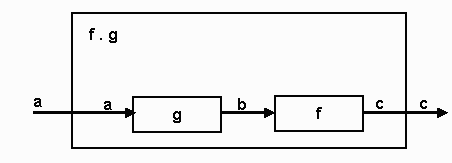

Haskell 1
© Eileen Head, Leslie C. Lander, 2000
Propose: To learn the functional style of programming.
Records, lists, user types, function types and local definitions will
be discussed.
Notes1.lhs
has codes presented in these notes as well as other examples.
Functional Programming and HUGS
- Slides in HTML format: http://bingweb.binghamton.edu/~head
- To a large extent the notes are based on the information in the
excellent text: Simon Thompson, Haskell: The Craft of Functional
Programming, 2nd edition Addison-Wesley Longman, 1999…
- …and A Gentle Introduction to Haskell, Version 98, available
on-line: http://haskell.org/tutorial/
- The slides were developed in collaboration with Prof. Les Lander.
- Haskell was the first name of H. Curry, a logician in the 30's
and 40's. He will be mentioned again.
Mathematical functions
- A function f is a rule that takes an input value x
and returns a value f (x) or f x
- The inputs x belong to a set X (called the domain
of f ).
- The values y = f (x) belong to a set Y
(called the range of f ).
- We write f : X -> Y.
Examples
- Functional programming refers to writing a program as a set of
functions
- Functions are defined in the script
- "=" means defined as
> sq x = x^2
> cube x = x *(sq x)
Haskell determines the type of the functions:
"::" means has type
...> :t sq
sq :: Num a => a -> a
Specifying types
- You can direct Haskell to attach the types the way you want them
- If you want "py" to be a Float rather than the Double type
determined by HUGS, insert the type in the script
> py :: Float
> py = 3.14159
Constraining the function "sq"
> sq :: Int -> Int
> sq x = x^2
Pattern Matching
- Function with alternatives: (using pattern matching)
> factorialP :: Int -> Int
> factorialP 0 = 1
> factorialP x = x * factorialP(x - 1)
Can not constraint type to only positive Int.
What happens
Guards
- Functions with alternatives: (using guards)
> factorial :: Int -> Int
> factorial x
> | x < 0 = error "neg x"
> | x == 0 = 1
> | otherwise = x * factorial(x - 1)
Use the type information to avoid defining a factorial function
for decimals
Haskell picks the most general type
> fact1 x
> | x < 0 = error "neg x"
> | x == 0 = 1
> | otherwise = x*fact1(x-1)
We would find:
...> :t fact1
fact1::(Ord a,Num a) => a->a
the input must be in the intersection of classes Ord and Num
Problems with Int
...> fact1 3.7
Program error: neg x
...> factorial 3.7
ERROR: Illegal Haskell 98 class constraint in inferred type
*** Expression : factorial 3.7
*** Type : Fractional Int => Int
Next note:
...> factorial 13
1932053504
When it should be 6227020800 (= 1932053504 + 2 * 232)
Large numbers
- Functional languages like Lisp have traditionally been good
calculators:
> factorial1 :: Integer -> Integer
> factorial1 n
> | n < 0 = error "neg n"
> | n == 0 = 1
> | otherwise = n * factorial1 (n - 1)
Integer expands with magnitude
Factorials of 50 and 500
- Load Haskell and load a script containing the definitions of
factorial. Then try "factorial1 50" and "factorial1 500"
Part of factorial of 3500
- Continue by trying "factorial1 3500." You may have to
wait quite a long time for the answer.
Simple syntax
- Notice how writing a Haskell function is like doing mathematics:
- Define the factorial function f as (N0 denotes the
natural numbers):
f : N0 -> N0
/ 1 n = 0 or 1
f(n) = <
\ n*f(n-1) otherwise
The biggest difference is that programmers use long names for
their functions!
Limitation of expressively of types
- We have the difficulty that we cannot exclude negative numbers so
easily
> factorial1::Integer -> Integer
> factorial1 n
> | n < 0 = error "neg n"
> | (n==0) || (n==1) = 1
> | otherwise = n * factorial1(n-1)
Type system
- Haskell’s type system has unusual features and is quite rich
- Haskell is statically typed
- Haskell is a purely functional language
- ALL computations are done via evaluation of expressions to yield
values
Types and values
- Every value has a type
- Functions are values
- Values are first class, that is,
- they can be passed as arguments to functions
- returned
Predefined types
- Some basic atomic values and types:
- Predefined data types
Int, Bool, Char, Float, ...
also Double, Integer
read "::" as "has type"
5 :: Int
5.0 :: Float
Float & Double need a decimal point or an exponent: 5.0
'a' :: Char
Char: the character type, 'a', 'P', '<',
etc. ASCII codes can be used: '\65'. Version 1.4 has
started to use Unicode.
"aba" :: String
Later we use keyword type
to define synonyms.
- A new type is not defined but a new name is given to an
existing type. (Like typedef in C)
Structured types
- Structured values
- List Processing is what gave LISP its name and
strength: Lisp allows structures of nested lists and each element of
the list or nested list can have a different type
- Non-homogeneous lists have proved to be very flexible
structures, supporting artificial intelligence and other sophisticated
applications
Lists
- Haskell lists are NOT like Lisp lists, they have to be homogeneous
- They are dynamic (can change length during execution)
- homogeneous list of Ints
[1,2,3] :: [Int]
(actually ...>:t [1,2,3] gives [1,2,3]::Num a => [a])
homogeneous list of Bool
[True,False,False]::[Bool]
Strings
- The literal syntax of string is a list of chars.
Prelude defines string
type String = [Char]
"aba" is shorthand for ['a','b','a']
We will visit lists many times.
By the way, this cursor indicates Haskell is garbage
collecting 
List operations
- For now, the important operations:
1:[2,3,4] = [1,2,3,4]
4:[] = [4]
head [1,2,3,4] = 1
tail [1,2,3,4] = [2,3,4]
init [1,2,3,4] = [1,2,3]
last [1,2,3,4] = 4
What is the type of
:t (:)
:t :
will produce an error because ":" is an infix operator
To convert it to a prefix operator use "( )"
:t head
:t init
Concatenation (appending) two lists
[1,2,3] ++ [10,11,12] = [1,2,3,10,11,12]
Definition:
(++) :: [a]->[a]->[a]
[] ++ ys = ys
(x:xs) ++ ys = x:(xs ++ ys)
- What if we recurs on ys instead of xs?
- Notice that (++) is associative operation.
Tuples
- There are non-homogeneous linear structures like the “struct” of
C or the “record” of Pascal and Ada:
- They are called “tuples”
('x', 99) :: (Char, Int)
type Person = (String,Int)
Compare
struct person {
char * name;
int i;
}
Another example:
type Zip_code = (String, Int)
First letter must be capital letter, you cannot use "zip_code" or
"Zip-code"
vestal :: Zip_code
vestal = ("NY", 13850)
fst vestal returns NY
snd vestal returns 13850
type just creates a
synonym and not another data type
User-defined types
- User Defined Types: type constructors
- union type:
data Color = Red | Blue | Black
Red, Blue and Black are data constructors of the
type Color
Example of a predefined type
data Bool = True | False
Product types
- Product type is an alternative to tuples
type Name = String
type Age = Int
data People = Person Name Age
x = Person "John" 25
A function to show x
showPerson :: People -> String
showPerson (Person n a) = n ++ " aged " ++ show a
Keyword type creates a synonym
Keyword data is a constructor for a NEW data type.
Polymorphic data types
Point
data Point a = Pt a a
This is a polymorphic data type: it works for any type “a”
Pt 2.0 3.0 :: Point Float
Pt 'a' 'b' :: Point Char
Pt True False :: Point Bool
A function to extract the individual values would be:
firstCoord :: Point a -> a
firstCoord (Pt m n) = m
Point is a first order data type
Point by itself is a type
There are no values in Haskell that have this type.
Tree
data Tree a = Leaf a | Branch (Tree a) (Tree a)
- This is a recursive polymorphic data type:
- recursive because Tree is defined in terms of itself
- it works for any type “a”
- A function to compute the size (i.e. the number of leaves)
treeSize :: Tree a -> Integer
treeSize (Leaf x) = 1
treeSize (Branch t1 t2) = treeSize t1 + treeSize t2
- Example of a Tree Int
tree = Branch (Leaf 3) (Branch (Leaf 6) (Leaf 9))
Function types
- Functions are values and have a type
\x -> x+1,
This is a lambda expression with type:
Num a => a -> a
Notice functions can be anonymous (i.e. no names)
Functions are normally defined by an equation or series of
equations
inc n = n + 1
(alternatively: inc = \n -> n + 1)
The type signature declaration used to declare the explicit
type
> inc :: Int -> Int
Type inference
- If the type is not explicitly declare then the type system can
infer the correct most general type.
inc :: Num a => a -> a
- In the tutorial, Hudak et al. use e1 => e2
to indicate that e1 reduces to e2.
My notes use the symbol "~>"
inc ( inc 3 ) ~> 5
Notice we need the "()" , inc inc 3 will give an error
Function composition
- A type of "polymorphism" that has nothing to do with data
structures is the function composition.
- Haskell the infix operator (.) as follows:
(.) :: (b -> c) -> (a -> b) -> a -> c
(f.g)x = f(g x)
- Composition is a way to GLUE functions together!

...> (inc . inc) 3
5
Or in the script (like math f o g) :
inc2 = inc . inc
- What is the type of inc and inc2?
Currying
- In the development of functional notations as a model of
computation, it has been important to concentrate on functions of one
variable
- Curry did considerable work in the area. The idea is often used
today in mathematics.
Currying a function
f : X x Y -> Z
can be thought of as a function
fc:X -> (Y -> Z)
where (Y -> Z) is the set of functions from Y
to Z
It is not a difficult idea
- (+) 3 5 ~> (3 +) 5 ~> 8
- (3 +) is a function that adds 3 to any value
- vs + (3,5) ~> 5
- must have both values
Example:
- I want a function "extract" that is given two integers "min" and
"max" and a list of integers "list" as input
- The result of the function must be a list of all those numbers in
"list" that do not lie between "min" and "max" (inclusive), e.g.
...> extract 3 5 [1,5,4,6,3,2,1]
[1,6,2,1]
Consider
> extract::Int->Int->[Int]->[Int]
> extract min max list
> |list == [] = []
> |otherwise = extractNonEmpty min max list
> where
> extractNonEmpty min max (a:x)
> | (a >= min)&&(a <= max) = extract min max x
> | otherwise = a:extract min max x
Alternatively
> extract1::Int->Int->[Int]->[Int]
> extract1 min max [] = []
> extract1 min max (a:x)
> | (a >= min) && (a <= max) = extract1 min max x
> | otherwise = a:extract1 min max x
Functions derived from extract:
In the script:
> extractOver8 = extract 8
> extractBetween8and16 = extract 8 16
In the interpreter:
...> :t extract
extract :: Int -> Int -> [Int] -> [Int]
...> :t extractOver8
extractOver8 :: Int -> [Int] -> [Int]
...> :t extractBetween8and16
extractBetween8and16 :: [Int] -> [Int]
Function application in a
curryed language
- Functions are left associative
- The follow will cause an error!
(+) 3 (*) 2 4 - NEED "( )"
(+) 3 ((*) 3 4)
Regular logs from general logs
logBase::Float->Float->Float
The function that returns the logarithm of a number using base 10:
...>:t logBase 10
logBase 10 :: Float -> Float
Apply the function logBase 10 to 100
...> logBase 10 100
2
Using where
- Local definitions (scope) via where
- where can be used for more readability
quadroot :: Float -> Float -> Float -> [Float]
quadroot a b c
| delta < 0 =
error "complex roots"
| delta == 0 = [term1]
| delta > 0 =
[term1+term2, term1-term2]
where
delta = b*b -
4*a*c
radix = sqrt
delta
term1 =
-b/(2.0*a)
term2 =
radix/(2.0*a)
- Compare with with a code from Pascal
type root_list = ^root_type;
type root_type = record
root: real;
next root_list
end;
function quadroot( a, b, c: real): root_list;
var delta, radix, term2: real;
roots, temp: root_list;
begin
roots := NIL;
delta := b*b - 4*a*c;
if delta < 0
then write(‘Error: Complex Roots’);
else begin
radix := sqrt(delta);
term2 := radix/(2*a);
new(temp);
roots^.next:=temp;
temp^.root := roots^.root - term2;
roots^.root := roots^.root + term2;
temp^.next := NIL
end
end;
quadroot := roots
end;
{kind=link}